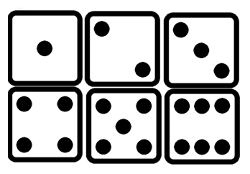
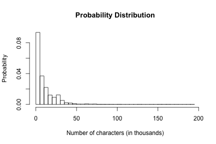
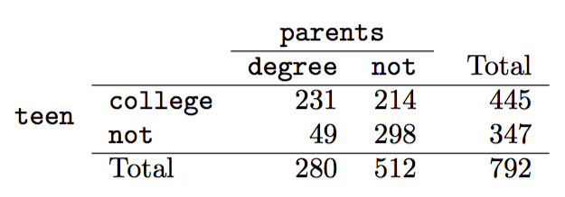
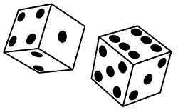

- Every Wednesday 19:00 - 21:00
- Slides: http://nikolaypavlov.github.io/da-workshops-3/
- Skype Chat: https://join.skype.com/gjN0CfAd4bhg
- Reference Book: https://www.openintro.org/stat/textbook.php
- Conditional Probability
- Install the following packages: openintro
Data Analysis with R
Probability
Mykola Pavlov
Data Scientist at Azzurro.io
Course Logistic
Topics
- Classical probability
- Properties
- Probability distribution (Special topic)
- Conditional probability
- Independent events
- Law of total probability
- Bayes's theorem
Classical probability
Let's say we have a set of events \(\{w_1, \dotsc, w_n\}\)

- Set of events is collectively exhaustive
- All events are mutualy exclusive
- All events are equialy possible
Probability of elementary event: \(P(w_i) = \frac{1}{n}\)
Probability of event: \(P(A) = \frac{k}{n}\)
Classical probability properties
Sample space \(\Omega = \{w_1, \dotsc, w_n\}\)
- \(P(\Omega) = 1\)
- \(P(A) = 0 <=> A = \emptyset\)
- \(P(A \sqcup B) = P(A) + P(B)\) - disjoint outcomes
- \(P(A \cup B) = P(A) + P(B) - P(A \cap B)\) - general addition rule
Exercise. Part 1
addmargins(table(email$spam, email$number, dnn=c("Spam", "Number")))
## Number
## Spam none small big Sum
## 0 400 2659 495 3554
## 1 149 168 50 367
## Sum 549 2827 545 3921
Of the 3,921 emails, 549 had no numbers, 2,827 had only one or more small numbers, and 545 had at least one big number.
- Are the outcomes none, small, and big disjoint?
- Determine the proportion of emails with value small and big separately.
- Compute the probability a randomly selected email from the data set has a number in it, small or big.
Exercise. Part 2
addmargins(table(email$spam, email$number, dnn=c("Spam", "Number")))
## Number
## Spam none small big Sum
## 0 400 2659 495 3554
## 1 149 168 50 367
## Sum 549 2827 545 3921
In the email data set with 3,921 emails, 367 were spam, 2,827 contained some small numbers but no big numbers, and 168 had both characteristics.
- Determine the probability a randomly drawn email from the email data set is spam and had small numbers (but not big numbers).
- What is the probability that the email had either of these attributes?
Classical probability properties
\(P(A_1 \cup \dotsc \cup A_k) = P(A_1) + \dotsc + P(A_k) - P(A_1 \cap A_2) - P(A_1 \cap A_3) - \dotsc - \\ - P(A_{k-1} \cap A_k) + \dotsc + (-1)^{k-1} P(A_1 \cap \dotsc \cap A_k)\)
\(P(A_1 \cup \dotsc \cup A_k) \leq P(A_1) + \dotsc + P(A_k)\)
\(\bar{A} := \Omega \backslash A, P(\bar{A}) = 1 - P(A)\)
Probability distribution (special topic)
hist(email$num_char, seq(0, 195.0, by=5), probability=T, xlab="Number of characters (in thousands)",
ylab="Probability", main="Probability Distribution")

- The outcomes listed must be disjoint.
- Each probability must be between 0 and 1.
- The probabilities must total 1.
Conditional probability
Let's say we roll a die once. Event A is 1. Event B is even outcome.
- Find \(P(A|B)\)
- Find \(P(A|B)\), if A is 2.
In general \(\Omega = \{w_1, \dotsc, w_n\}, B = \{w_1, \dotsc, w_k\}, k \geq 1\),
then \(P(A|B) = \frac{|A \cap B|}{|B|} = \frac{|A \cap B| \frac{1}{\Omega}}{|B| \frac{1}{\Omega}} = \frac{P(A \cap B)}{P(B)}\), \(P(B) \ne 0\)
\(P(A|B) P(B) = P(A \cap B)\) - general multiplication rule
Example

- If at least one parent of a teenager completed a college degree, what is the chance the teenager attended college right after high school?
\(P(A|B) = \frac{|A \cap B|}{|B|} = 231/280 = 0.825\)
- A teenager is randomly selected from the sample and she did not attend college right after high school. What is the probability that at least one of her parents has a college degree?
\(P(A|B) = \frac{|A \cap B|}{|B|} = 49/347 = 0.141\)
Independent events
Let's say we have some events \(A, B\) in the sample space \(\Omega\). \(A\) independent of \(B\), if
\(P(A|B) = P(A)\), \(B \ne \emptyset\), same for \(P(B|A) = P(B)\), \(A \ne \emptyset\)
\(P(A|B) P(B) = P(A) P(B) \Leftrightarrow P(A \cap B) = P(A) P(B)\)
\(P(A \cap B)\) - joint probability \(P(A), P(B)\) - marginal probability
Example
About 9% of people are left-handed. Suppose 2 people are selected at random from the population. Because the sample size of 2 is very small relative to the population, it is reasonable to assume these two people are independent.
- What is the probability that both are left-handed?
- What is the probability that both are right-handed?
\(P(A \cap B) = P(A) P(B) = 0.09 * 0.09 = 0.0081\) \(P(\bar{A} \cap \bar{B}) = (1 - P(A)) * (1 - P(B)) = 0.91 * 0.91 = 0.8281\)
Exercise. Part 1.
Let X and Y represent the outcomes of rolling two dice.

- What is the probability that the first die, X, is 1?
- What is the probability that both X and Y are 1?
- Use the formula for conditional probability to compute P (Y = 1 | X = 1)
- What is P (Y = 1)? Is this different from the answer from part 3?
Hint: think about the relationships between X and Y
Smallpox in Boston 1721

- Find the probability that a randomly selected person who was not inoculated died from smallpox.
- Determine the probability that an inoculated person died from smallpox.
Law of total probability
Let's say we have some event \(A\) in the sample space \(\Omega\), and mutualy exclusive \(B_1, \dotsc, B_k\), so that \(B_1 \sqcup \dotsc \sqcup B_k = \Omega\)
\(P(A) = P(A \cap B_1) + \dotsc + P(A \cap B_k) = P(A|B_1) P(B_1) + \dotsc + P(A|B_k) P(B_k)\)
\(P(A) = \sum_{i=1}^{k}P(A|B_i) P(B_i)\)
Example
Suppose that two factories supply light bulbs to the market. Factory X's bulbs work for over 5000 hours in 99% of cases, whereas factory Y's bulbs work for over 5000 hours in 95% of cases. It is known that factory X supplies 60% of the total bulbs available. What is the chance that a purchased bulb will work for longer than 5000 hours?
\(P(A) = P(A|B_X) P(B_X) + P(A|B_Y) P(B_Y) = 0.99 * 0.6 + 0.95 * 0.4 = 0.974\)
Bayes' theorem
We know that \(P(A) = \sum_{i=1}^{k}P(A|B_i) P(B_i)\), but if we want to know \(P(B_i|A)\)?
\(P(A \cap B_i) = P(A|B_i) P(B_i) = P(B_i \cap A) = P(B_i|A) P(A)\)
\(P(B_i|A) = \frac{P(A|B_i) P(B_i)}{P(A)} = \frac{P(A|B_i) P(B_i)}{\sum_{i=1}^{k}P(A|B_i) P(B_i)}\)
Example
Sasha is a system administrator of popular movie file server. Sometimes, when new movie comes out, his server uplink is overloaded. 35% of new movies are commedies, 20% sci-fi, and 45% are horrors. When new commedie comes out, the server uplink fills up about 25% of times, it fills up 70% of times with a release of the new sci-fi, and 5% of time in case of new horror movie.
If Sasha comes to work and finds the uplink is overloaded, what is the probability that new sci-fi movie is on the server?
\(A\) - full uplink event, \(B_1, B_2, B_3\) - new commedie, sci-fi, horror events, \(P(B_2|A)\) - ?
\(P(B_1) = 0.35, P(B_2) = 0.2, P(B_3) = 0.45\)
\(P(A|B_1) = 0.25, P(A|B_2) = 0.7, P(A|B_3) = 0.05\)
\(P(B_2|A) = \frac{P(A|B_2) P(B_2)}{P(A|B_1) P(B_1) + P(A|B_2) P(B_2) + P(A|B_3) P(B_3)}\)
\(P(B_2|A) = \frac{0.7 * 0.2}{0.25 * 0.35 + 0.7 * 0.2 + 0.05 * 0.45} = 0.56\)
Homework
- Lab 2 - Probability
- Skype Chat for discussions: https://join.skype.com/gjN0CfAd4bhg
- Reading: OpenIntro Statistics Chapter 2, till p. 2.3
- Reference Book: https://www.openintro.org/stat/textbook.php
- Conditional Probability